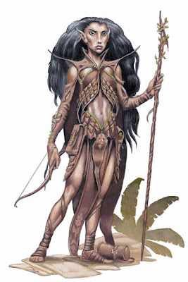
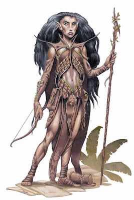

{{ selectedPlayer.firstName }}


 

{{ selectedPlayer.description }}
Points de vie :
{{ selectedPlayer.maxAttributes.maxLifePoints }}
Points de magie :
{{ selectedPlayer.maxAttributes.maxManaPoints }}
Points d'armure :
{{ selectedPlayer.maxAttributes.maxShield }}
Nombre de pas :
{{ selectedPlayer.maxAttributes.maxFootSteps }}
Vous avez débloqué et créé tous les joueurs créables (message à changer)